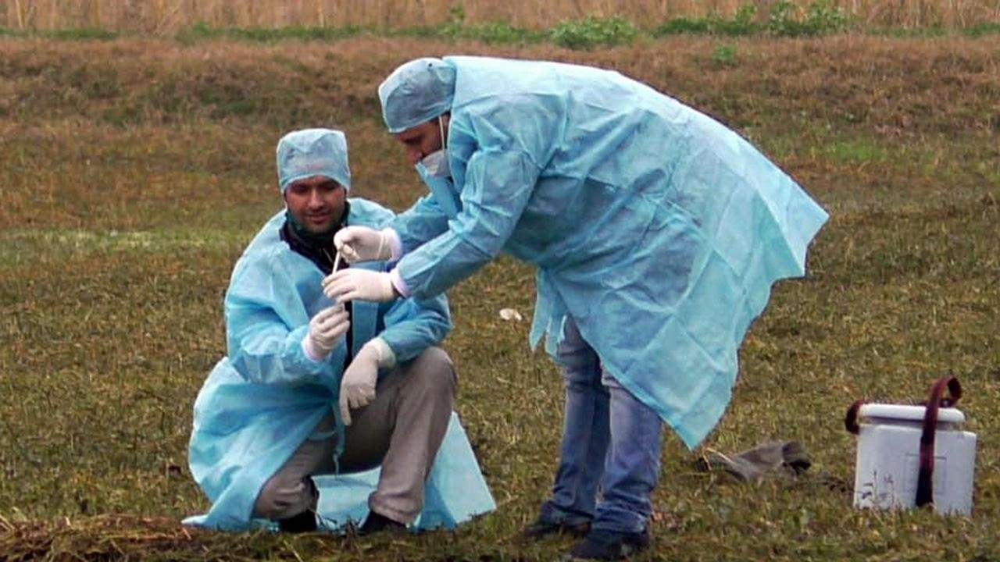

After the death of more than 1700 migratory birds across north India, reports are now coming in that a strain (H5N8) of avian influenza (bird flu) has been detected in samples of dead birds from Rajasthan, Himachal Pradesh, Madhya Pradesh, and Kerala.
After the mysterious bird deaths over the past week, their samples were sent to National Institute of High Security Animal Diseases, Bhopal, for investigation.
The country was declared free from avian influenza in july 2015after completion of disinfection and post operation of surveillance. As part of preparedness, country wide surveillance is being maintained against the disease.
Avian Influenza (Bird flu) is a highly infectious and severe respiratory disease in birds caused by the H5N1 influenza virus.
It can occasionally infect humans as well.
Although cooking the bird meat (like chicken) kills the virus, it is able to infect human beings while handling the bird, or washing the raw meat.
India was declared free from avian influenza in July 2015 after completion of disinfection and post operation surveillance.
As part of preparedness, countrywide surveillance is being maintained against the disease.
The H5N8 strain outbreaks were reported in 2010, in Asia, and was first found in domestic ducks in China.

Although it is lethal for birds, the H5N8 strain of avian influenza has a less chances of spreading to humans, as compared to H5N1.
With continued incidence of avian influenza due to existing and new influenza A(H5) viruses in poultry, there is a need to remain vigilant in the animal and public health sectors, according to WHO.
‘One health’ approach – zoonotic diseases can be controlled through a coordinated approach from veterinary and health departments.
Kerala has announced, that culling of ducks in the infected regions will be undertaken as per Central government guidelines (Avian Influenza Action Plan-2015).
A flock of 1,000 ducks within the 1-km radius of the infection hotspot will be culled to prevent the spread of the disease.
In Kangra district, Himachal Pradesh, the slaughtering, sale, purchase and export of any poultry, birds, fish of any breed and their related products, including eggs, meat, chicken, have been prohibited – in the affected subdivisions.
Steps taken, under Section 34 of the Disaster Management Act, 2005.
Wildlife officials in Himachal Pradesh, Rajasthan, and Madhya Pradesh, have been put on high alert.
Prohibitory orders (under Section 144 of Cr.P.C.) have been imposed and a one-km radius area was declared a “zero mobility zone” in Rajasthan’s Jhalawar town, after the mass death of crows owing to avian influenza.
Kerala has announced, that culling of ducks in the infected regions will be undertaken as per Central government guidelines (Avian Influenza Action Plan-2015).